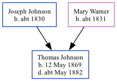

Thomas Johnson 1869 - c1882
[ Home ] | [ Calendar ] | [ Surnames Index ] | [ Family History ]The son of Joseph Johnson (an agricultural laborer) and Mary WarnerThomas Johnson, the first cousin three-times-removed on the father's side of Nigel Horne, was born in St Peters, Thanet, Kent, England on May 12, 18691,2 and baptized there on Dec 7, 1873. On Apr 2, 1871, he lived at 1 Serene Place, Broadstairs, Kent, England4.
He died c. May 1882 in Thanet, Kent, England3.
Parents
- Joseph was born c. 1830
- Mary Ann was born c. 1831
Citations
- England & Wales births 1837-2006 - Findmypast
- Kent Baptisms - Findmypast
- England & Wales deaths 1837-2007 - Findmypast
- 1871 England, Wales & Scotland Census - Findmypast (was age 1 and the son of the head of the household)
Media
England & Wales Births 1837-2006 - BMD/B/1869/2/AZ/000357/012
Kent Baptisms - GBPRS/CANT/B/96351697
England & Wales Deaths 1837-2007 - BMD/D/1882/2/AZ/000184/220
Family Tree
Generated by ged2site. Last updated on Nov 13, 2024